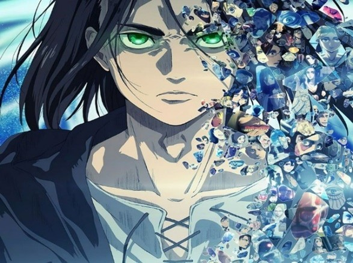

Hi! This is my first blog in this website and it's about
the things i like doing when i have free time. Have a great time and enjoy.
I like watching anime when I have free time. My all-time favourite anime is One
piece it’s basically about pirates and Government and it’s adventures anime with
more than thousand episode and it’s a very long anime it almost took me two month
to watch it . Monkey D. Luffy is the main character in this anime. There are many
more anime that I like such as attack on titan, Black clover, Naruto, Jujutsu Kaisen,
my hero academic, fire force, I want to eat your pancreas, howl’s moving castle and so on.